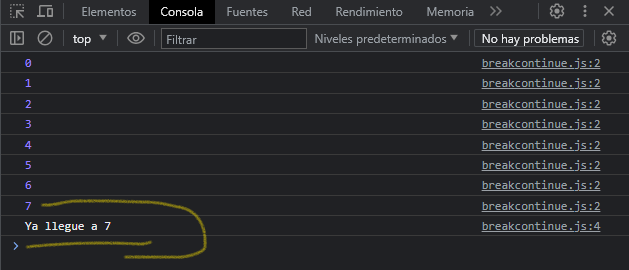
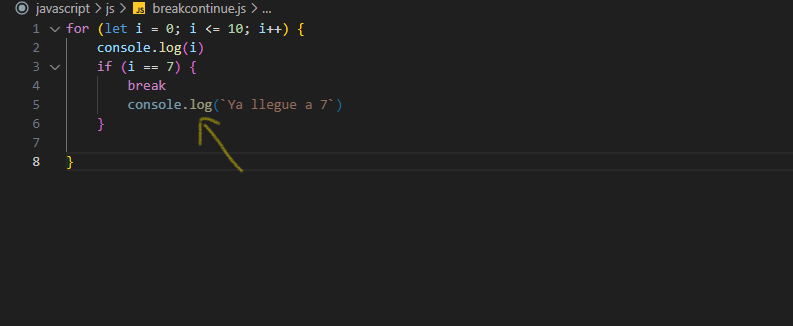
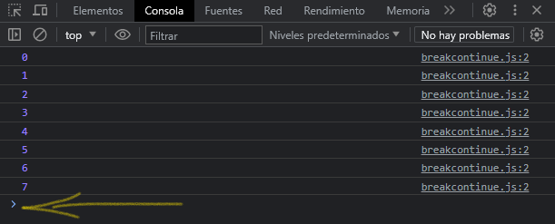

Sentencia break
Termina el bucle actual, sentencia switch y transfiere el control del programa a la siguiente sentencia a la sentencia de terminación de estos elementos. La sentencia break incluye una sentencia opcional que permite al programa salir de una sentencia etiquetada. La sentencia break necesita estar anidada dentro de la sentencia etiquetada. La sentencia etiquetada puede ser cualquier tipo de sentencia; no tiene que ser una sentencia de bucle.
Veamos un ejemplo de como se puede utilizar break:
for (let i = 0; i <= 10; i++) {
console.log(i)
if (i == 7) {
console.log(`Ya llegue a 7`)
break
}
}
En el ejemplo anterior tenemos un bucle for que se repite hasta 10. Dentro mostramos por consola el numero que se va aumentando en 1, tenemos una condición que cuando el bucle llegue al numero 7 detendremos el bucle con la sentencia break. A pesar que el bucle tiene que llegar a 10, con la sentencia break detenemos el bucle según la condición que hallamos establecido.
Veamos el resultado:
Por fines didácticos mostramos un mensaje indicando que se llego a la condición que establecimos, sin embargo, la sentencia break detiene la ejecución del código en donde este se encuentre y evita que la instrucción siguiente se ejecute. Veamos que sucede cuando subimos la sentencia break arriba de nuestro console.log()
Se puede notar que la instrucción console.log() es de un tono pálido indicando que esa instrucción no se cumplirá ya que arriba de esta se encuentra la sentencia break indicando que se detendrá la ejecución del código y evitando que se muestre nuestro console.log() que habíamos definido.
Veamos nuevamente el resultado:
Sentencia continue
Termina la ejecución de las sentencias de la iteración actual del bucle actual o la etiqueta y continua la ejecución del bucle con la proxima iteración.
En contraste con la sentencia break, la sentencia continue no termina la ejecución del bucle por completo; en cambio, en un bucle while, salta de regreso a la condición, en un bucle for, salta a la expresión actualizada.